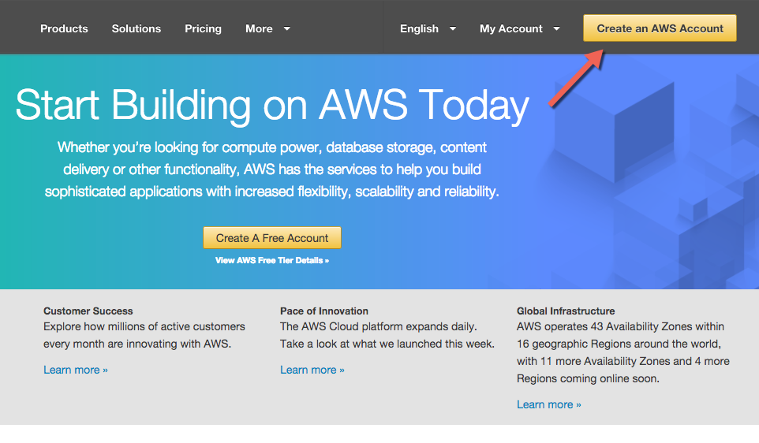
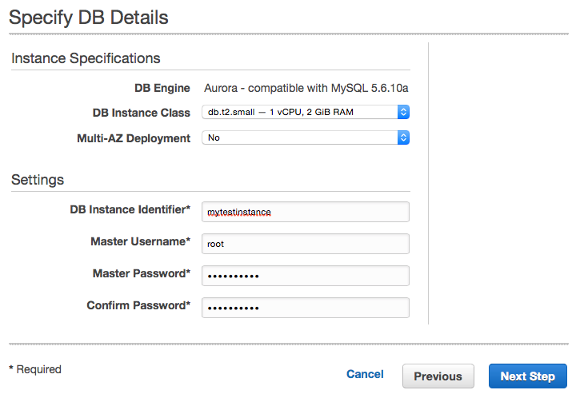
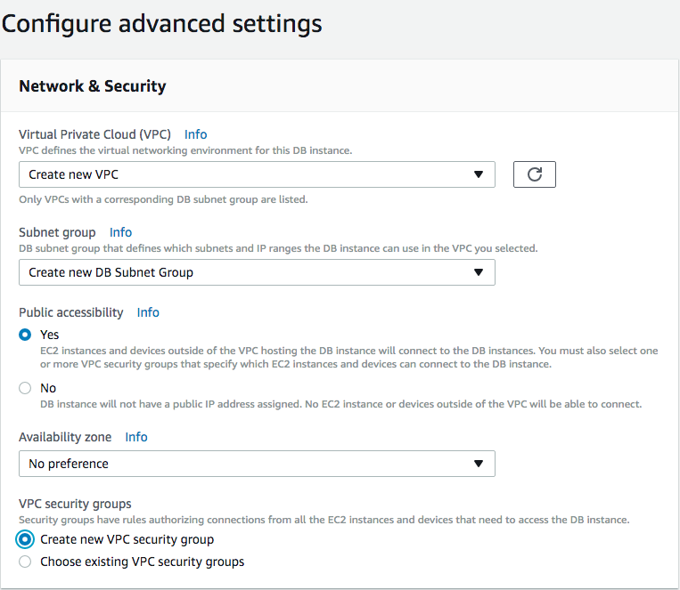
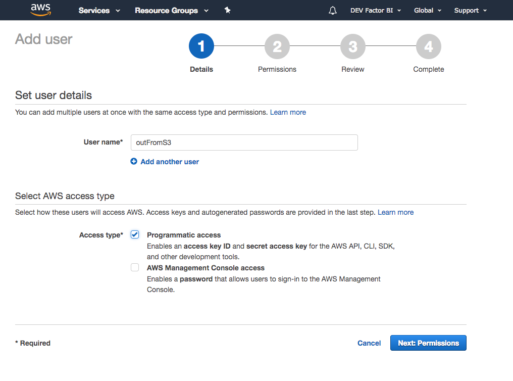
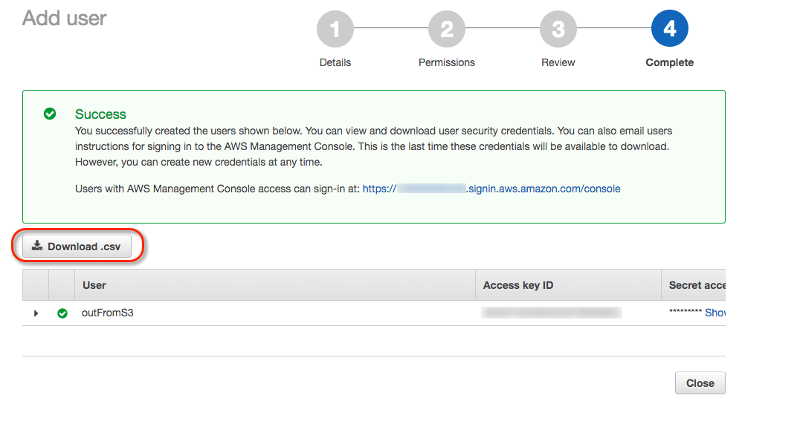

Link your AWS Account¶
Follow these instructions to link your AWS Account and RDS Aurora instance to Bipost API.
IMPORTANT NOTICE: Many settings suggested here are for testing purposes. If you are to use the following AWS services for production you may want to follow your company policies and understand how to use AWS security according to your needs.
Don't have an AWS account?¶
-
Create an AWS account here aws.amazon.com

-
AWS usually makes an automated verification phone call, we suggest to provide a land line.
- Provide payment information.
- Select Basic Support (free plan).
- Check if you can open RDS Dashboard, by searching under AWS services.
- Congrats you have an AWS account!
Not familiar with AWS or just want to skip creating AWS related services? Write us.
Check closest AWS Region to you location¶
Click the above link and hit HTTP Ping and look for the lowest latency.
Maybe you want to try this at different times of the day.
Take note of the closest region.

Get Canonical User ID from your IAM Home¶
To perform the following steps, you need to sign in with the root AWS account.
- Upper right corner of your AWS console, click your account name (or follow next link).
- My Security Credentials.
- Click Continue to Security Credentials if dialog appears.
- Account Identifiers.
-
Copy AWS Account ID (12-digit) and Canonical User ID (64-digit).

-
Email these numbers to info@factorbi.com so we can setup your dedicated Bucket.
Q: How these numbers are used?
We use your Canonical User ID to create and provide access to a new and dedicated S3 bucket for your AWS Account. Further on you will link this bucket to you RDS instance.
Create IAM Policy to Grant Access to S3¶
From this point on you need the newly S3 bucket ARN that we provided over email on the previous step.
- Open IAM Console.
- In the left navigation pane choose Policies.
- Create policy blue button.
- Select Policy Generator
-
Click JSON tab.

-
Copy and paste the following.
{ "Version": "2012-10-17", "Statement": [ { "Effect": "Allow", "Action": [ "s3:GetObject", "s3:GetObjectVersion" ], "Resource": [ "arn:aws:s3:::bipostdata-123456789012" ] }, { "Effect": "Allow", "Action": [ "s3:GetObject", "s3:GetObjectVersion" ], "Resource": [ "arn:aws:s3:::bipostdata-123456789012/*" ] } ] } -
Replace the text
arn:aws:s3:::bipostdata-123456789012with the bucket ARN you received from us over email. -
Double check the JSON text is using your own ARN bucket and click Review policy blue button on the lower right.
-
Enter the following on the Review policy screen.
Name:
AllowAuroraToS3Name:
Connection to Factor BI bucket. -
Click Create policy blue button.
Further information from AWS go to: Allowing Amazon Aurora to Access Amazon S3 Resources
Create IAM Role to Allow RDS Access to S3¶
- Open IAM Console.
- In the left navigation pane choose Roles.
- Create role blue button.
-
Choose AWS service, then RDS

-
Select your use case click RDS - CloudHSM and Directory Service, click Next: Permissions blue button.
- Click Next:Review.
- Set Role name:
RDSLoadFromS3and click Create role. - Now from the navigation details, click the role you just created.
-
Under permissions tab, detach by clicking X the following:
AmazonRDSDirectoryServiceAccess
RDSCloudHsmAuthorizationRole
-
Now click Attach policy blue button.

-
Select
AllowAuroraToS3and click Attach policy blue button. -
Copy Role ARN string and save it for further use. It may look like this:
arn:aws:iam::123456789012:role/RDSLoadFromS3
Further information from AWS go to: Creating an IAM Role to Allow Amazon Aurora to Access AWS Services
Create Aurora Instance¶
Instance specifications¶
- From AWS Console Home, upper right corner (next to you name) be sure to select the closest region to your location.
- Under menu Services search RDS.
- From Amazon RDS click Instances.
- Launch DB Instance, orange button.
- Select Engine: Amazon Aurora, scroll down, Edition: MySQL 5.7-compatible click Next orange button.
- DB instance class: for testing purposes select the smallest available, currently t2.small
- Multi-AZ deployment: for testing purposes select No
- Settings, DB Instance identifier: assign a name, lower-case and no special characters.
- Master username: root
-
Master Password: assign a strong password and store it in a secure place.
Password can't contain spaces and the following characters:
/ " @ -
Click Next orange button.

Network & Security¶
- Virtual Private Cloud (VPC): Create new VPC
- Subnet group: Create new DB Subnet Group
- Publicly accessible: Yes
- Availability zone: No Preference
- VPC security groups: Create new VPC security groups

Database options¶
- DB Cluster Identifier: leave blank
- Database name: leave blank
- Database port: 3306
- DB parameter group: default.aurora-mysql5.7
- DB cluster parameter group: default.aurora-mysql5.7
- Option group: leave default
Encryption¶
- Encryption: Disable encryption
Failover¶
- Priority: tier-0
Backup¶
- Backup retention period: 1 day
Monitoring¶
- Enhanced Monitoring: Disable enhanced monitoring
Maintenance¶
- Auto minor version upgrade: Enable auto minor version upgrade
- Maintenance windows: No preference
Launch DB Instance¶
-
Click Launch DB Instance orange button.
-
This process may take a few minutes.
-
Click View DB Instance details.
RDS Instance Security Group¶
Click Instances left pane.
Once the new instance has Status: available proceed:
- Click your new instance.
- Scroll down to Connect section.
-
Under Security group rules click the blue string that looks like this
rds-launch-wizard (sg-XXXXXXXX)
-
You are now on EC2 Management Console and Security Group ID is already selected.
- Click Actions \ Edit inbound rules
- Remove the default Custom TCP rule created.
- Click Add Rule, under Type select
MYSQL/Aurora -
Source Custom and enter this value:
0.0.0.0/0 -
Repeat steps 7 & 8, and type value
::/0
-
Click Save blue button.
- Click Actions \ Edit outbound rules
- Verify if Type:
All traffic, Destination:Customand value:0.0.0.0/0is already set, if not, add the rule. - Go back to RDS Console, select your instance, click Instance actions \ Reboot, confirm with orange button on the right.
-
Wait until Status is
available
-
Click your DB Instance, scroll down to Details section and check if Security groups are
( active )
Set IAM Role to Aurora Cluster¶
- Open RDS console.
- Choose Clusters on left pane.
- Click radio button of your newly cluster.
-
Click Actions then Manage IAM roles.

-
Under Add IAM roles to this cluster select the role you just created:
RDSLoadFromS3and click Add role button.
-
Wait until you see Status active under Current IAM roles for this cluster.
- Click Done.
Create Cluster Parameter Group¶
- Open RDS console.
- On left pane go to Parameter Groups.
-
Click Create parameter group orange button on top.
Parameter group family:
aurora-mysql5.7Type:
DB Cluster Parameter GroupGroup name:
AuroraClusterAllowAWSAccessDescription:
Allow cluster access to Amazon S3 -
Click Create orange button and refresh browser.
- Click check box on your new
auroraclusterallowawsaccessparameter group and click Parameter group actions and then Edit button on top. - Make sure you have your ARN role string (step 12 here) and replace it below.
-
Set the following:
Name Edit Values Example aurora_load_from_s3_role paste Role ARN string arn:aws:iam::123456789012:role/RDSLoadFromS3aurora_select_into_s3_role paste Role ARN string arn:aws:iam::123456789012:role/RDSLoadFromS3aws_default_s3_role paste Role ARN string arn:aws:iam::123456789012:role/RDSLoadFromS3 -
Click Save Changes orange button.
-
Click Preview changes and it should look like this:

Further information from AWS go to: Associating an IAM Role with a DB Cluster
Create DB Parameter Group¶
- Open RDS console.
- On left pane go to Parameter Groups.
-
Click Create parameter group orange button on top.
Parameter group family:
aurora-mysql5.7Type:
DB Parameter GroupGroup name:
AuroraInstanceAllowAWSAccessDescription:
Allow instance access to Amazon S3 -
Click Create orange button and refresh browser.
- Click check box on your new
aurorainstanceallowawsaccessparameter group and click Parameter group actions and then Edit button on top. -
Set the following:
Name Edit Values log_bin_trust_function_creators 1 max_allowed_packet 1073741824 max_connections 16000 max_user_connections 4294967295 -
Click Preview changes and double check.
- Click Save changes orange button.
Set Cluster Parameter Group¶
- Open RDS console.
- On left pane go to Clusters.
- Click radio button on your new cluster.
- Click Actions then Modify cluster button on top.
- Under Database options, set DB cluster parameter group to
auroraclusterallowawsaccess. - Scroll down and click Continue.
- Click option Apply immediately and click Modify cluster.
Set Instance Parameter Group¶
- Open RDS console.
- On left pane go to Instances.
- Click radio button on your new instance.
- Click Instance Actions \ Modify button on top.
- Scroll down and under Database options, set DB parameter group to
aurorainstanceallowawsaccess - You may also notice that DB cluster parameter group is already set to
auroraclusterallowawsaccess - Click Continue orange button.
- Select Apply Immediately and click Modify DB Instance.
- Use refresh icon and wait until Status is available on your instance.
- Click Instance actions, select Reboot and confirm.
- Use refresh icon and wait until Status is available on your instance.
Verify Instance Configuration¶
- Open RDS console.
- On left pane go to Instances.
- Click your new instance.
-
Verify the following:
DB instance status: available
Parameter group: aurorainstanceallowawsaccess (in-sync)
DB cluster parameter group: auroraclusterallowawsaccess (in-sync)
Security groups: rds-launch-wizard (sg-XXXXXXXX) ( active )
Publicly accessible: Yes
Test connection to your RDS Aurora¶
-
Download and install any MySQL client of your preference:
For Mac you may use "Sequel Pro" or "MySQL Workbench" For Windows you may use "MySQL Workbench" or "HeidiSQL" -
On your AWS Console go to RDS Dashboard, then Clusters, select your new cluster and copy the Cluster Endpoint, which is a blue string with more than 60 characters.
-
Launch your MySQL client and configure a new connection:
Name: type any name of your preference.
Host: Paste the Cluster Endpoint.
Username: root
Password: type the Master Password
Port: 3306
Database: Leave blank
Connect using SSL: No
-
Click Connect and verify that you can successfully connect to your RDS instance.
Configure Instance Connection Details on Factor BI Console¶
- Log in to Factor BI Console.
- Go to RDS Instances and then click under Hostname.
- Complete all fields on the form with instance connection information.
Security of your RDS Instance for Production¶
If your are ready to use Bipost API for production, we highly recommend the following:
- Use MySQL client to create a new user.
- Set a strong password.
- Gran the new user with the following:
GRANT LOAD FROM S3 ON *.* TO 'your-user-name'; -
Set the following Global Privileges:

Security for Downloading Data¶
If you plan to download data from Aurora to your on-premises databases, there are some settings to make on your AWS account.
- Open IAM console.
- Click Add user blue button on top left corner.
- User name:
outFromS3 - Access type: Programmatic access
-
Click Next: Permissions blue button lower right corner.

-
Select Attach existing policies directly
- On the search box type S3 and select AmazonS3FullAccess
-
Click Next: Review blue button lower right corner.

-
Click Download .csv.
-
Email the CSV to info@factorbi.com so we can setup the downloading process.

Console Access to Bucket¶
Bipost synchronization uses S3 to upload the data that is extracted from the on-premises database. The bucket is located within Factor BI AWS account so we can efficiently handle API calls, patches and new releases.
Remember, we create a unique S3 bucket for each one of our customers, so nothing gets mixed up.
Sometimes you may want to access this bucket and review files and folders.
To accomplish this we provide an AWS Console access with a user, password and a direct link to your bucket.